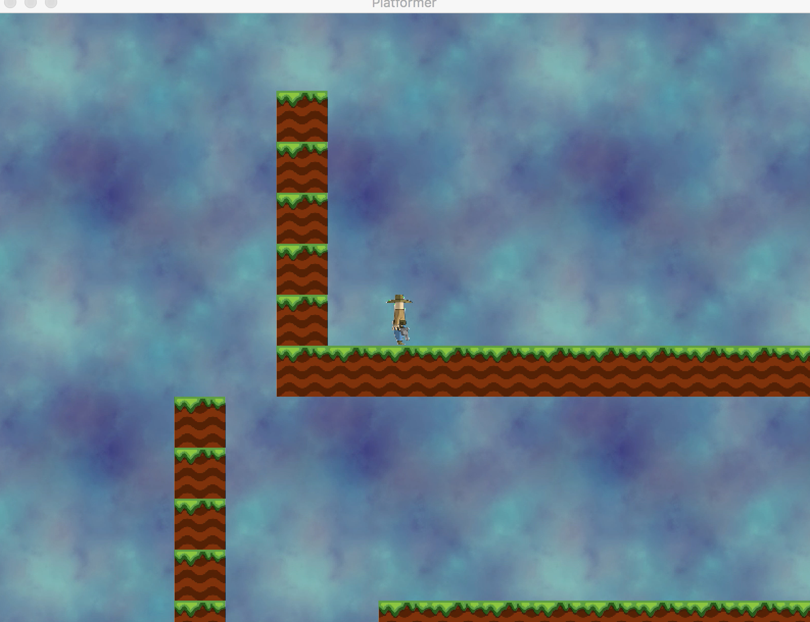
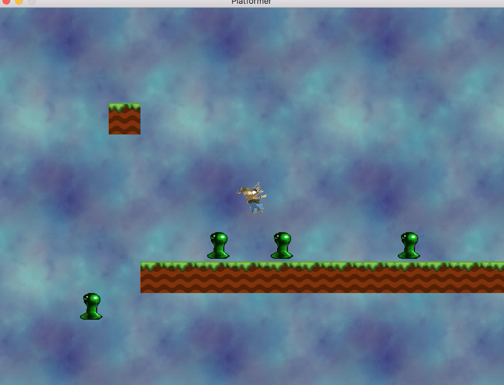
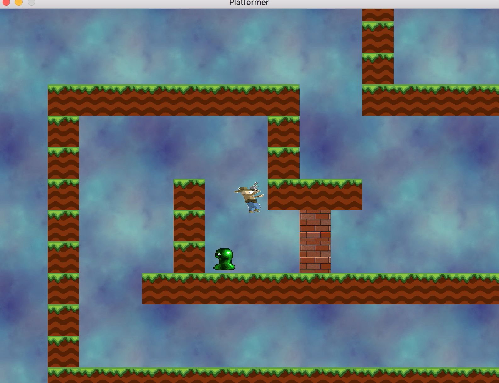
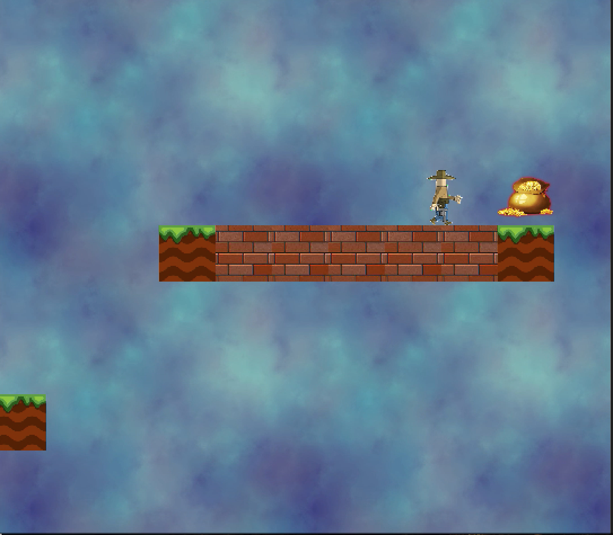
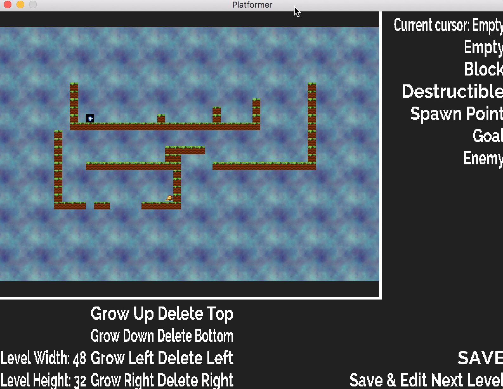
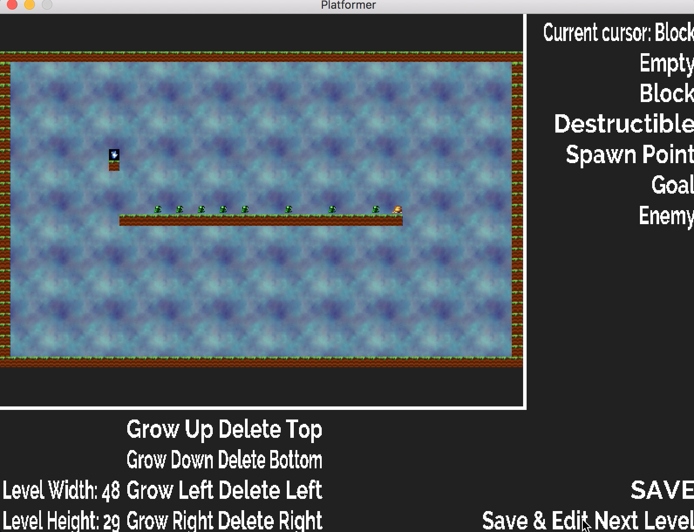

|
Platformer
Platformer
|
     
To play the platformer, simply launch the executable for your platform.
up/left/down/right or w/a/s/d - movement
i/j/k/l - (special feature!) destroy destructible blocks
space - jump
Executables for Mac and Linux are provided in the Game directory, or you can compile the game yourself (see below).
If you want to compile the game from source yourself, compiling Platformer should be super simple! The appropriate SDL2 libraries are already included in the "ThirdParty" folder for you, and the Makefile accounts for cross platform compilation. Compiling Platformer should be as simple as entering the shell of your choice, navigating to the Platformer root directory, and running the command 'make'. This should compile a Platformer executable into the Game directory for you.
Levels are loaded from Assets/Levels according to the configuration files located at Config/levels.txt.
A level editor is provided in the TileEditor directory for Mac and Linux. Like the game itself, the editor can also be compiled from source by running make tile_editor. The editor allows you to edit only the levels specified in Config/levels.txt.
To edit a level, select the tile you would like to place from the list on the top right, then simply click the location in the level you want it to appear. The size of the level can be increased or decreased using the buttons on the bottom left. If the level is grown at any point, the new tiles will be filled with the currently selected block. The editor saves your levels when you exit in addition to anytime you click save.
All levels must have exactly one spawn point and at most one goal.
The sprite editor is a python script located in the SpriteEditor directory, and can be run by installing Pillow 5.0.0, a version of which is included for install if you wish to manually. To install simply run the setup.py python script in the SpriteEditor/Pillow-5.0.0 folder. Python 2.7 is required.
For this assignment we implemented a component-based game object system. Overall, it was a very useful system to work with, but we did run into a few issues that we didn't have time to fix yet but will fix for assignment 3. The first was that only one of each component could be included on each game object. This was fine most of the time, but sometimes we wanted to separate parts of our lambda components into different pieces for readability, and could not due to this limitation. Another issue was highlighted by our RenderComponents. In order to get our engine to find them, we had to add any subclass of RenderComponent as a RenderComponent. This is because our component mapping doesn't support inheritance very well. Components have to retrieved by the type they were added as, not by the dynamic type they actually are. That meant that we could only find subclasses of RenderComponent later by getting the RenderComponent and casting it to the correct type if we needed to call any functions on it. A third issue is that of our camera system. It was tacked on as an afterthought when we decided that our levels should have scrolling, but it needed influence in a lot of different areas of our engine. Translating between the coordinate spaces was spread out a little too much through our code, although we managed to rein it in a little bit. For asssignment 3, we will rebuild it so that it is properly abstracted and much less brittle (i.e. it doen't break if there's more or less than one camera in the scene). Oh, and the last thing: physics are not fun to program. Initially we tried to code a robust physics system that could handle objects moving very fast by interpolating between its old and new positions and checking for collisions, but this had to scrapped in favor of a simple check of the current position because it proved too buggy. For the purposes of this game, the simpler system works just fine, although physics introduces a lot of edge cases and so there are probably still some bugs we haven't ironed out, although it's hopefully pretty good. Something that did go really well was the editor. It was pretty painless to keep updating as we made modifications to our engine, and basing its core in our engine was a really smart move for keeping it up to date with the iterations we made.
1.8.14